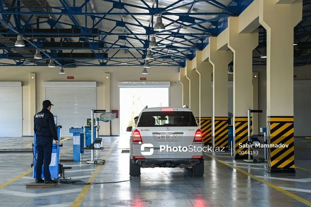
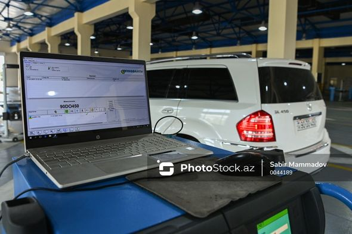
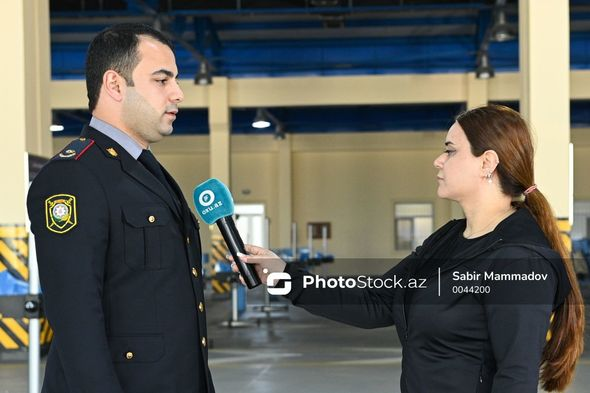
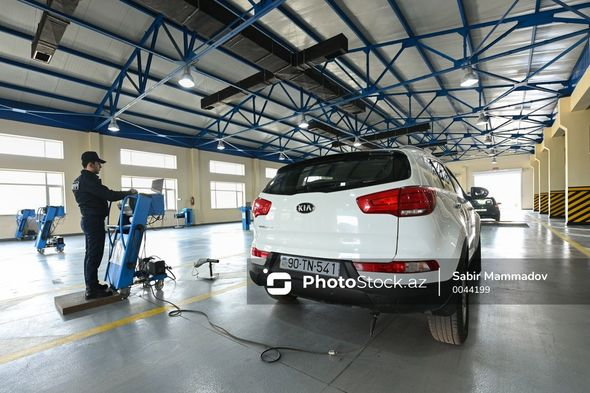
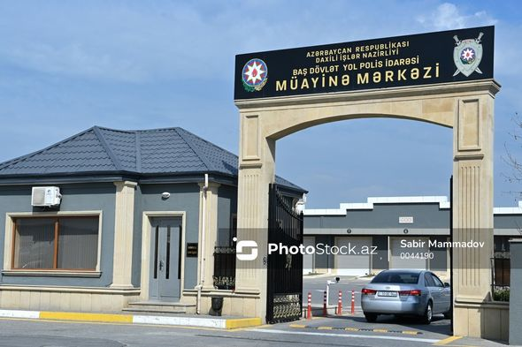
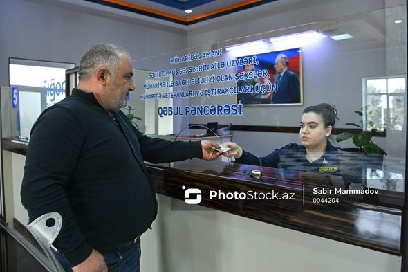

Sürücülərin 50 manat cərimə olunmamaq üçün üz tutduqları mərkəzdən REPORTAJ - FOTO
Sürücü nəqliyyat vasitəsini Baş Dövlət Yol Polisi İdarəsinin Texniki Müayinə Mərkəzinin giriş qapısına yaxınlaşdırır. Avtomobilin sürücüsü maşını müayinə xəttinə daxil edən zaman birinci postda maşının sənədləri və sürücülük vəsiqəsi mərkəzin əməkdaşına təqdim edilir.
Bu dəfə Oxu.Az-ın əməkdaşları Texniki Müayinə Mərkəzində olublar.
Müayinə xəttində əməkdaş qeydiyyat şəhadətnaməsi ilə avtomobilin üzərində olan dövlət nömrə nişanını uyğunlaşdırır, nömrələr eynidirsə, maşın müayinə xəttinə buraxılır.
Paytaxtda BDYPİ-nin texniki müayinə mərkəzləri - Sabunçu və Qaradağ rayonlarında fəaliyyət göstərir.
Baş Dövlət Yol Polisi İdarəsinin Texniki Müayinə Mərkəzinin Dövlət Avtomobil müfəttişi polis mayoru Kamal Əhmədli deyir ki, birinci postda nəqliyyat vasitəsinin yanğınsöndürmə balonu, tibb çantası texniki tələblərə uyğundursa, artıq maşın digər posta buraxılır:
“İkinci postda isə xüsusi aparatla istər benzin, istərsə də dizel avtomobillərdən xaricə atılan tullantı qazlarının miqdarı yoxlanılır”.
Qeyd edək ki, 2022-ci ilin noyabr ayında paytaxtda müəyyən olunmuş vaxtlarda hərəkəti məhdudlaşdırılan yük avtomobillərinin və avtobusların sürücülərinin axşam saatlarında nəqliyyat vasitələrini texniki baxışdan keçirə bilmələri üçün texniki müayinə mərkəzlərində 24 saat fasiləsiz iş rejimi tətbiq edilir.
K.Əhmədlinin sözlərinə görə, gecə saatlarında avtomobilini texniki baxışdan keçirmək istəyən sürücülər kifayət qədər çoxdur:
“Saatından asılı olmayaraq müraciət edən sürücülər üçün texniki müayinə mərkəzlərində avtomobilini rahatlıqla texniki baxışdan keçirmə imkanına malikdirlər. Nəqliyyat vasitələrinin sahibləri və sürücüləri onları maraqlandıran məsələlərlə bağlı operativ məlumat almaq üçün günün 24 saatı (012) 590-71-13 nömrəli qaynar xətt ilə əlaqə saxlaya bilərlər”.
Müayinə xəttində üçüncü postda isə maşının ön işıqlarının qabaq və yaxın hissəsi, üfüqi və şaquli istiqaməti yoxlanılır. Əgər nasazlıq olarsa, sürücüyə xəbərdarlıq edilir. Eyni zamanda maşında duman işıqları da yoxlanılır.
Dövlət avtomobil müfəttişi bildirib ki, müayinə mərkəzləri martın 18-dən gücləndirilmiş iş rejimində çalışır:
“Gün ərzində Sabunçu və Qaradağ rayonlarında 500-600 maşın texniki baxışdan keçir. Düşünürəm ki, bayram günləri bu say artacaq. Sürücülərə müraciət edirik ki, avtomobillərini vaxtında texniki baxışdan keçirsinlər.Nəqliyyat vasitəsinin növbəti texniki baxışının keçiriləcəyi gündən 20 gün ərzində texniki baxışdan keçirilməməsi nəticəsində hər 20 gündən bir sürücülər 50 manat cərimə olunacaqlar”.
Müayinə xəttinin dördüncü postda isə nəqliyyat vasitəsinin dayanacaq əyləcinin, beşinci hissədə isə təkərin vəziyyəti yoxlanılır”.
Nəqliyyat vasitəsi birinci, ikinci postdan keçərsə, digər texniki problem olsa da, müayinə xəttini tam bitirir. Artıq həmin avtomobilin texniki baxışdan keçib-keçməməsini avtomobil müfəttişi müəyyən edir. Ötən ildən də problem qalıbsa, sürücüyə izah olunur ki, problemi həll etsin.
Sürücü müayinə xəttindən keçdikdən sonra qeydiyyat zalına yaxınlaşır və orada nəticələr sürücüyə təqdim olunur. Əgər maşın texniki tələblərə uyğundursa, o halda talon verilir.
Zalda müharibə zamanı şəhid olmuş şəxslərin ailə üzvləri, müharibə ilə bağlı əlilliyi olan şəxslər, müharibə veteranları və iştirakçıları üçün ayrıca qəbul pəncərəsi var.
Nəqliyyat vasitələrinin qanunla müəyyən edilmiş hallarda texniki baxışdan keçirilməsinə görə dövlət rüsumu 30 manat 40 qəpik təyin edilib.
Avtomobil istehsal olunduğu vaxtdan dörd il keçdikdə - iki ildə bir dəfə, istehsal olunduqları vaxtdan on il keçdikdə - ildə bir dəfə texniki baxışdan keçirilməlidir.
Daha çox foto burada: PhotoStock.az
İlhamə Əbülfət